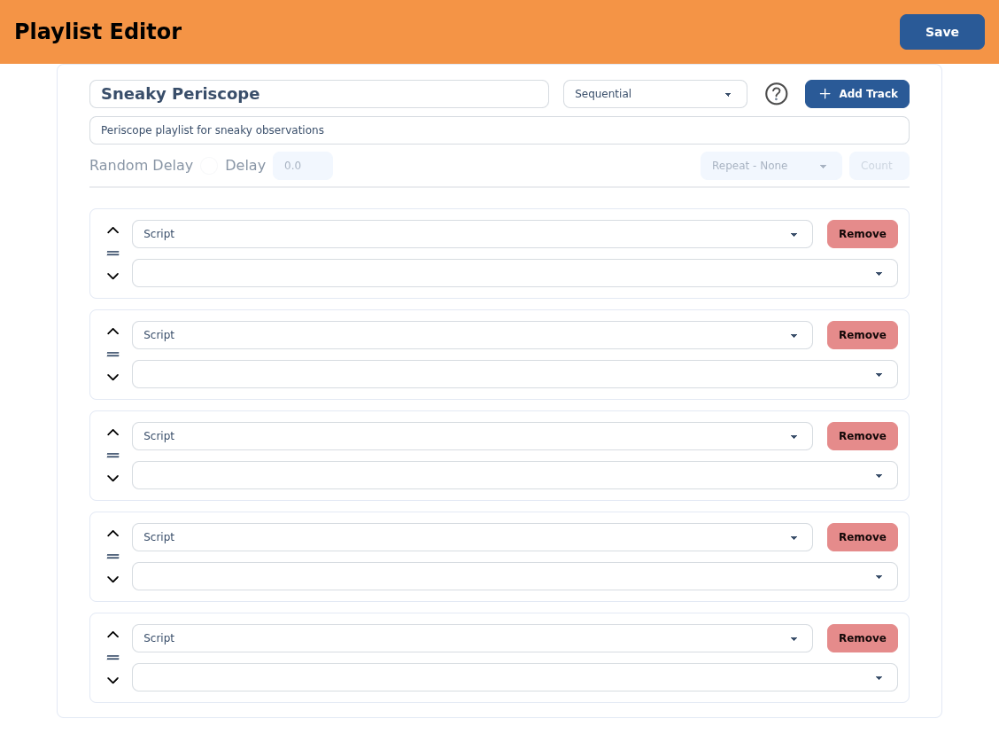
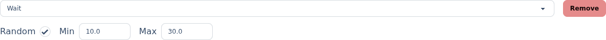

Build a playlist.
A playlist chains your scripts together so you can fire a whole sequence with one command — a routine of animations that plays in order, on shuffle, on a loop, or with pauses in between.
§The Playlists list
The Playlists screen lists every playlist by Playlist Name and Description. Filter to find one, select New to start one, or click a row to edit it. Each row's actions let you copy (duplicate), play (run it on the droid now) or delete it. It works just like the Scripts list.
§The editor
Give the playlist a Name, pick a type (how it plays — see below), and optionally a Description. Select Add Track to add entries, drag or use the arrows to reorder them, and Save when you're done. The ? button opens an in-app reference for the playlist types.

§Playlist types
The type decides the play order and what happens when the playlist reaches the end. All types except plain Sequential are interruptible — a new script or playlist sent to the server takes over once the current track finishes.
| Type | How it plays |
|---|---|
| Sequential | Plays tracks in order, then stops. Anything sent while it's playing waits until the whole playlist finishes. |
| Sequential, Interruptible | Plays in order, but a new script or playlist interrupts it as soon as the current track finishes. |
| Sequential, Repeatable | Plays in order, then starts over from the top. Always interruptible. |
| Shuffle | Plays every track once in random order, then stops. |
| Shuffle with Repeat | Shuffles through all tracks, then reshuffles and goes again. |
| Shuffle with Delay | Shuffles through all tracks, waiting a delay between each. |
| Shuffle with Delay and Repeat | Shuffle with Delay that reshuffles and repeats once every track has played. |
§Playback settings
Two settings sit under the name; each only applies to the types that support it, and greys out otherwise.
- Repeat —
None,Count(repeat a set number of times, entered in the box beside it) orInfinite. Available on the Repeatable and with Repeat types. - Random Delay — the pause between tracks, in seconds. Leave it off for a fixed Delay, or tick it to draw a random wait between a Min and Max. Available on the Shuffle with Delay types.
§Tracks
Each track is one entry in the sequence. Set its type, then fill in the rest:
- Script — search and select one of your scripts to play.
- Playlist — nest another playlist inside this one. Only plain Sequential playlists can be nested (so a random playlist can't scramble its own running order). A Sequential playlist itself can't hold nested playlists.
- Wait — pause for a Track Duration in seconds. Tick Random to wait a random time between a Min and Max instead.

Reorder tracks with the up/down arrows or by dragging the handle, and use Remove to drop one.
§Save & run
Save stores the playlist. From then on you can run it from the list's play action, or trigger it from the remote. To play it right away while editing, save first, then run it from the list.
If nested playlists reference each other in a way that would loop forever, the save is rejected and the offending track is called out — swap or remove it and save again.